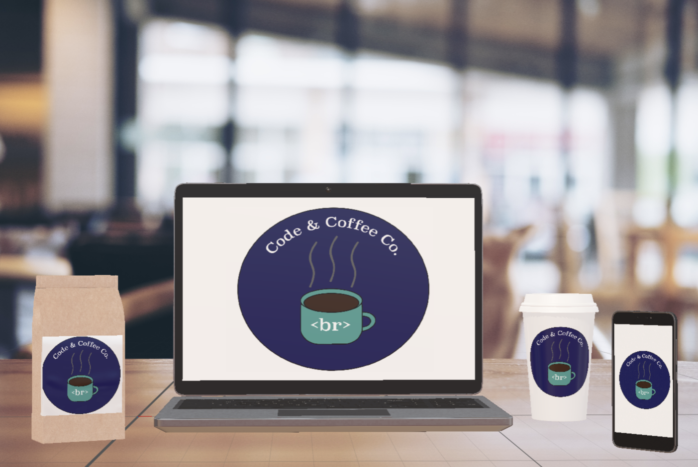

Design
Organizational Branding Project
Skills used: Adobe - Illustrator, Dimension
For this project, I designed a logo and brand identity system for a coffee shop dedicated
to people who are involved in or aspire to work in the field of technology. I named the brand Code & Coffee Co.
and envisioned it as a productive space for students in tech as well as professional software engineers or developers.
The iconic logo for Code & Coffee Co. illustrates a cup filled with hot coffee marked by the HTML break symbol to demonstrate
a coffee break. The image represents the main product sold at the company and the HTML tag signifies that coding and technology
are incorporated into the theme of this coffee shop.


Emoji Collage
Skills used: Adobe Photoshop
For my Principles of Visual Design class, I designed a set of emojis that represent the feelings of a community of my choice.
I chose the Computational Media (CM) community because I felt close to this group and I knew a good amount of people from my classes
and some members from CM Ambassadors who I could photograph for this project. Each image represents a different emotion within
the CM community.
Travel Troopers App & Map Prototype
Skills used: Adobe xD, physical model, Wizard of Oz Prototyping
While studying abroad in Georgia Tech's Barcelona Summer Program (2018), I took a class on User Interface Design.
For our group project throughout the entire course, my team and I created a prototype of an app and augmented reality
map interface that helped groups traveling abroad find the best local restaurants as recommended by their friends. In addition to
recommendations, our app and map interfaces included the ability to provide directions to these locations and facilitate
communication among groups of friends.


×

Futuristic Pet Bowl
Skills used: Sketching, paper interface
In the same UI class, I was assigned an open-ended individual project where I had to design, layout, and mockup
a Family Messaging System that a busy family could use to communicate with each other across time and space. My idea was to
create something that would allow a family to communicate in terms of when their pet was last fed or if it had already been
fed by another family member. The invention I designed was a futuristic pet bowl that recorded the time that food was last placed
into the pet's bowl so members of the family would know if their pet needed their food to be served. Below you will find the report
and design sketches for this project.


Copyright © 2018 Fernanda Moreno. All rights reserved.